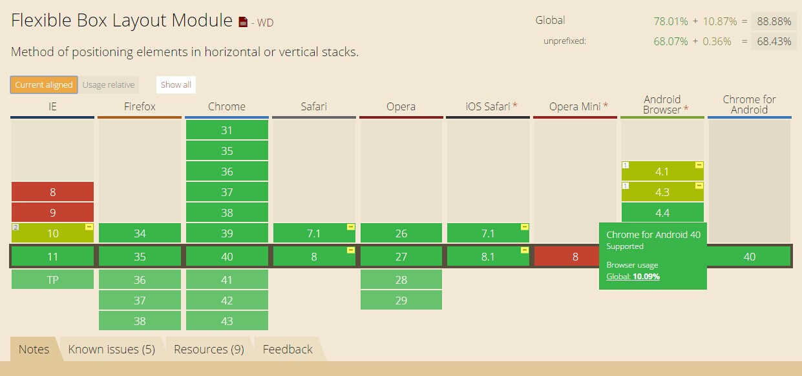
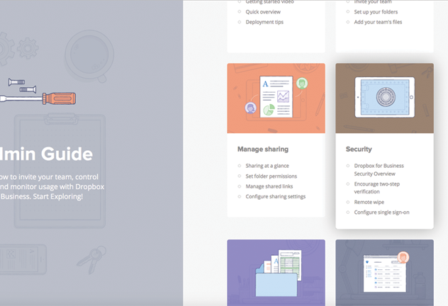
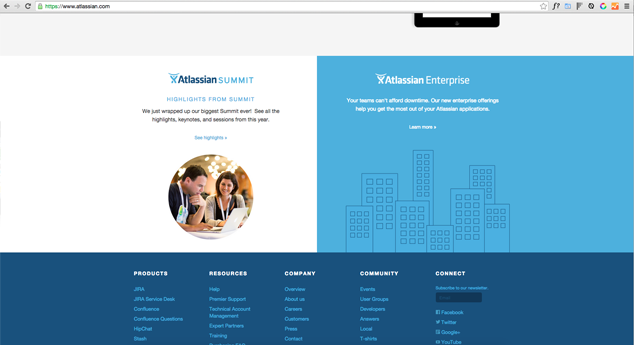
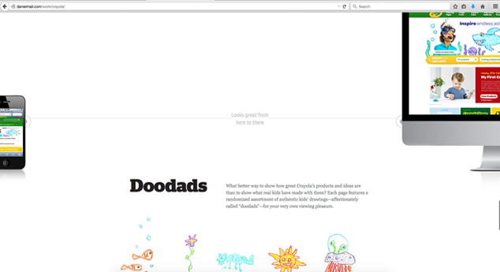
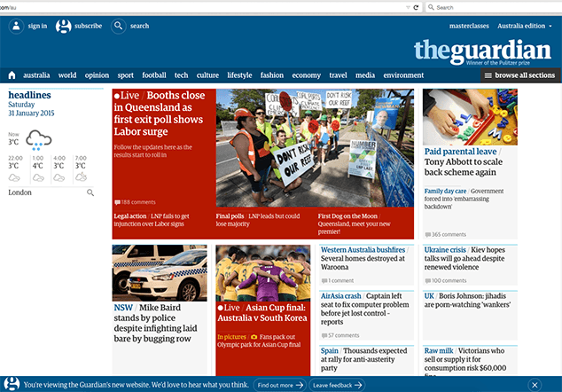
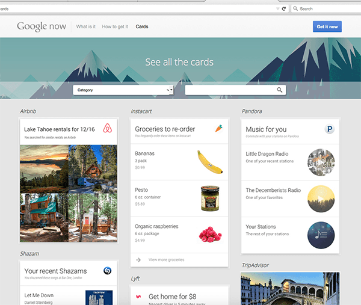
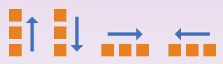
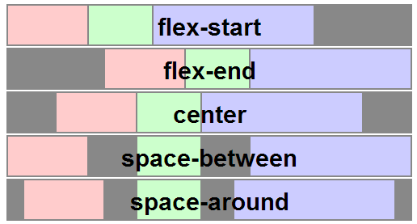
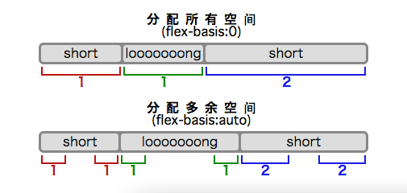

Css3-flexbox
- 介绍
- 伸缩布局盒模型和术语
- 伸缩容器 ―「display」的值「flex」与「inline-flex」
- 伸缩项目
- 排序与方向
- 伸缩行
- 伸缩性
- 对齐
介绍
- 从2012年9月 CSS Flexible Box Layout Module(www.w3.org/TR/css3-flexbox/)已经成为候选推荐标准（CR）
- 各大浏览器支持程度较好「查」
- 通过灵活使用Flexbox的新旧语法、添加浏览器前缀、sass等实现最佳浏览器兼容
- Flexbox布局最适合应用程序的组件和小规模的布局，（网格布局更适合那些更大规模的布局）
- Card Layouts
- Split screen layouts
- Pinned Layouts
- Newspaper and ad units
- Multi-column layouts
- Dashboards

- ...
旨在提供一个更加有效的方式制定、调整和分布一个容器里的项目布局，即使他们的大小是未知或者是动态的；让容器有能力让其子项目能够改变其宽度、高度、顺序，以最佳方式填充可用空间
你现在就可以使用Flexbox
通过Flexbox使布局更加方便灵活
Flexbox模型

伸缩容器 ―「display」的值「flex」与「inline-flex」
| 名称： | display |
| 新值： | flex | inline-flex |
伸缩容器的主轴方向 ―「flex-direction」属性

| 名称： | flex-direction |
| 取值： | row | row-reverse | column | column-reverse |
| 初始： | row |
| 适用于： | 伸缩容器 |
- 「row」伸缩容器的主轴与当前书写模式的行内轴（文字布局的主要方向，即'direction': ltr | rtl）同向
- 「row-reverse」与row相反
- 「column」伸缩容器的主轴与当前书写模式的块轴（块布局的主要方向，即'writing-mode': horizontal-tb | vertical-rl | vertical-lr）同向
- 「column-reverse」column-reverse
伸缩行换行 ―「flex-wrap」属性
| 名称： | flex-wrap |
| 取值： | nowrap | wrap | wrap-reverse |
| 初始： | nowrap |
| 适用于： | 伸缩容器 |
- 「flex-wrap」属性控制伸缩容器是单行还是多行，也决定了侧轴方向 ― 新的一行的堆放方向
- 「nowrap」伸缩容器为单行
- 「wrap」伸缩容器为多行，新的一行的堆放方向为侧轴的方向
- 「wrap-reverse」伸缩容器为多行，新的一行的堆放方向与侧轴的方向相反
伸缩方向与换行 ―「flex-flow」缩写
| 名称： | flex-flow |
| 取值： | <「flex-direction」> || <「flex-wrap」>
|
显示顺序 ―「order」属性
| 名称： | order |
| 取值： | <number>数值越小越靠前，若有多个项目有相同的「order」值，这些项目照文件顺序排 |
| 初始： | 0 |
| 适用于： | 所有元素 |
#main { display: flex; }
#main > article { flex:1;
order: 2; }
#main > nav { width: 200px;
order: 1; }
#main > aside { width: 200px;
order: 3; }
@media all and (max-width: 600px) {
#main { flex-flow: column; }
#main > article, #main > nav,
#main > aside {
/* 回到文件顺序 */
order: 0; width: auto;
}
}
主轴对齐 ―「justify-content」属性
| 名称： | justify-content |
| 取值： | flex-start | flex-end | center | space-between | space-around |
| 初始： | flex-start |
| 适用于： | 可伸缩容器 |

侧轴对齐 ―「align-items」与「align-self」属性

堆栈伸缩行 ―「align-content」属性

「flex-grow」属性
| 名称： | flex-grow |
| 取值： | <number>负值不合法 |
| 初始： | 0 |
| 适用于： | 伸缩项目 |
| 动画： | 是，除了在「0」与其他值之间转变以外。
|
「flex-grow」此
「flex-shrink」属性
| 名称： | flex-shrink |
| 取值： | <number>负值不合法 |
| 初始： | 1 |
| 适用于： | 伸缩项目 |
| 动画： | 是，除了在「0」与其他值之间转变以外。
|
「flex-shrink」此
「flex-basis」属性
| 名称： | flex-basis |
| 取值： | <'width'>
|
| 初始： | auto |
| 适用于： | 伸缩项目 |
| 百分比： | 相对与伸缩容器的内-主轴长度 |
| 动画： | 是，只要「width」是可动画的。
|
「flex-basis」与「width」属性使用相同的值的此部件可以用来设置「flex-basis」长写并指定伸缩基准值，也就是根据可伸缩比率计算出剩余空间的分布之前，伸缩项目主轴长度的起始数值。若在「flex」缩写省略了此部件，则「flex-basis」的指定值是长度零。 若「flex-basis」的指定值是「auto」，则伸缩基准值的指定值是元素主轴长度属性的值。（这个值可能是关键字「auto」，代表元素的长度取决于其内容。）

「flex」缩写
- 「flex: 0 auto」 「flex: initial」与「flex: 0 1 auto」相同。（这也就是初始值。）根据「width」／「height」属性决定元素的尺寸。（如果项目的主轴长度属性的计算值为「auto」，则会根据其内容来决定元素尺寸。）当剩余空间为正值时，伸缩项目无法伸缩，但当空间不足时，伸缩项目可收缩至其最小值。网页作者可以用对齐相关的属性以及「margin」属性的「auto」值控制伸缩项目沿着主轴的对齐方式。
- 「flex: auto」与「flex: 1 1 auto」相同。根据「width」／「height」属性决定元素的尺寸，但是完全可以伸缩，会吸收主轴上剩下的空间。如果所有项目均为「flex: auto」、「flex: initial」或「flex: none」，则在项目尺寸决定后，剩余的正空间会被平分给是「flex: auto」的项目。
- 「flex: none」与「flex: 0 0 auto」相同。根据「width」／「height」属性决定元素的尺寸，但是完全不可伸缩。其效果与「initial」类似，但即使在空间不够而溢出的情况下，伸缩项目也不能收缩。
- 「flex: [positive-number]」与「flex: [positive-number] 1 0px」相同。该值使元素可伸缩，并将伸缩基准值设置为零，导致该项目会根据设置的比率占用伸缩容器的剩余空间。如果一个伸缩容器里的所有项目都使用此模式，则它们的尺寸会正比于指定的伸缩比率。
| 名称： | flex |
| 取值： | none | [ <'flex-grow'> <'flex-shrink'>? || <'flex-basis'> ] |
| 初始： | 参见各属性 |
| 适用于： | 伸缩项目 |
「flex」的常见值